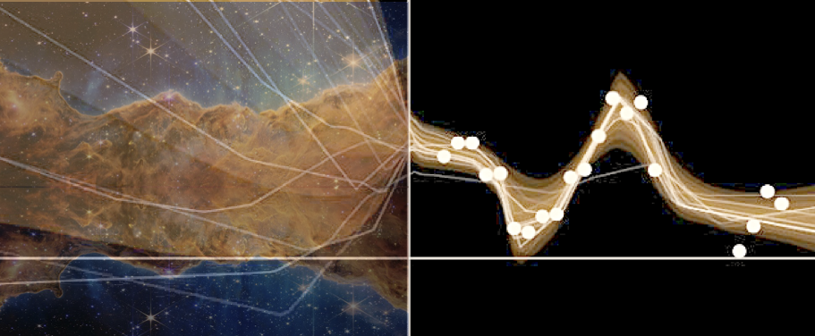
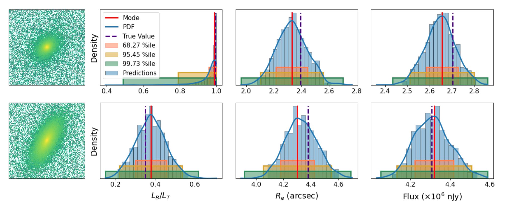
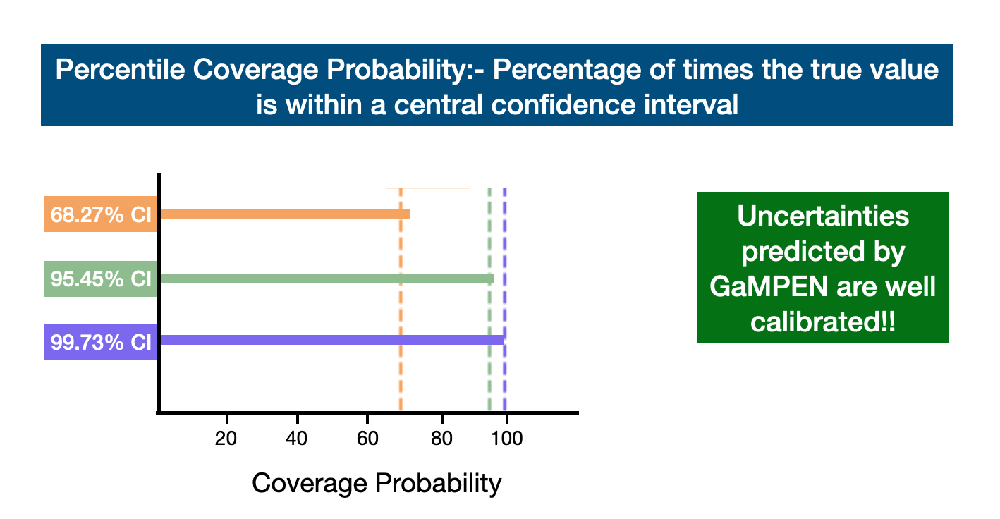

Machine Learning Uncertainties in Astronomy
Robust uncertainty estimation is crucial in order to realize the full potential of ML in astronomy.
Machine Learning & Uncertainties
Although the use of machine learning (ML) has grown exponentially in astronomy over the last decade, there has been a very limited amount of work exploring the uncertainties of the predictions made by various machine learning algorithms. Thus, one focus of my research has been to develop and test techniques that enable us to robustly estimate uncertainties for predictions made by our ML frameworks.
Specifically with respect to galaxy morphology determination :- From the early attempts at using a CNN to classify galaxies morphologically to the largest ML-produced morphological catalogs currently available, most CNNs have provided broad morphological classifications. There has been very limited work on estimating morphological parameters using CNNs; and there has been no work on estimating robust uncertainties of CNN determined morphological parameters. Even popular non-ML tools like Galfit severely underestimate uncertainties by values as high as $\sim75\%$. Meanwhile, the computation of full Bayesian posteriors for different morphological parameters is crucial for drawing scientific inferences that account for uncertainty and thus are indispensable in the derivation of robust scaling relations or tests of theoretical models using morphology.
These motivated us to develop GaMPEN, a machine learning framework that
can robustly estimate posterior distributions for various morphological parameters.
The figure below shows a few examples of GaMPEN's application on randomly selected simulated galaxies.

Posterior Estimation/Uncertainty Prediction

Our training data consists of noisy input images by design, but we know the corresponding morphological parameters with perfect accuracy. However, due to the different amounts of noise in each image, the predictions of GaMPEN at test time should have different levels of uncertainties. Thus, in this situation, we train GaPEN to predict aleatoric uncertainties.
Although we would like to use GaMPEN to predict aleatoric uncertainties, the covariance matrix, $\boldsymbol{\Sigma}$, is not known {\it a priori}. Instead, we train GaMPEN to learn these values by minimizing the negative log-likelihood of the output parameters for the training set, which can be written as $$ \begin{split} - \log \mathcal{L}_{VI} \propto \sum_{n} & \frac{1}{2}\left[\boldsymbol{Y}_{n}-\boldsymbol{\hat{\mu}}_{n}\right]^{\top} \boldsymbol{\hat{\Sigma_n}}^{-1}\left[\boldsymbol{Y}_{n}-\boldsymbol{\hat{\mu}}_{n}\right] \\ & + \frac{1}{2} \log [\operatorname{det}(\boldsymbol{\hat{\Sigma_n}})] + \lambda \sum_{i}\left\|\boldsymbol{\omega_{i}}\right\|^{2} . \end{split} $$ where $\boldsymbol{\hat{\mu}}_n$ and $\boldsymbol{\hat{\Sigma}}_n$ are the mean and covariance matrix of the multivariate Gaussian distribution predicted by GaMPEN for an image, $\boldsymbol{X}_n$. $\lambda$ is the strength of the regularization term, and $\boldsymbol{\omega}_i$ are sampled from $q(\boldsymbol{\omega})$. Note that the above function contains the inverse and determinant of the covariance matrix -- calculating can be numerically unstable. Refer to the GaMPEN paper on how to navigate this.
Thus to predict uncertainties:-
- For every image, GaMPEN predicts the parameters of a multivariate Gaussian distribution ($\boldsymbol{\mu}$,$\boldsymbol{\Sigma}$). We then draw a sample from this distribution.
- Now the network is slightly altered using Monte Carlo Dropout, and the above step is re-performed with a slightly different estimate of ($\boldsymbol{\mu}$,$\boldsymbol{\Sigma}$).
- The last step is now repeated 1000 times for each galaxy
The combination of the above two steps allows us to estimate robust uncertainties for GaMPEN predictions by incorporating both aleatoric and epistemic uncertainties intro our predictions. GaMPEN is the first machine learning framework that can estimate posterior distributions for multiple morphological parameters of galaxies.
Are our predicted uncertainties accurate?
 For a framework which estimates full Bayesian distributions, it's not sufficient to only check how well the predicted values line up with the true values. It's impertinent to check the nature of the predicted distributions:- Are they of the correct shape? Are they too narrow? Or too wide?
One great way to check the predicted distributions is to calculate the percentile coverage probabilities, defined as the percentage of the total test examples where the true value of the parameter lies within a particular confidence interval of the predicted distribution. We calculate the coverage probabilities associated with the $68.27\%$, $95.45\%$, and $99.73\%$ central percentile confidence levels, corresponding to the $1\sigma$, $2\sigma$, and $3\sigma$ confidence levels for a normal distribution. For each distribution predicted by GaMPEN, we define the $68.27\%$ confidence interval as the region on the x-axis of the distribution that contains $68.27\%$ of the most probable values of the integrated probability distribution.
We calculate the $95.45\%$ and $99.73\%$ confidence intervals of the predicted distributions in the same fashion. Finally, we calculate the percentage of test examples for which the true parameter values lie within each of these confidence intervals. An accurate and unbiased estimator should produce coverage probabilities equal to the confidence interval for which it was calculated (e.g., the coverage probability corresponding to the $68.27\%$ confidence interval should be $68.27\%$). As the above figure shows the coverage probabilities for the three output parameters individually (top three panels), as well as the coverage probabilities averaged over the three output variables (bottom panel). As can be seen from the figure above, GaMPEN's coverage probabilities almost perfectly line up with the predicted distributions. Thus uncertainties predicted are well-calibrated ($\lesssim 5\%$ deviation).
It is important to note that the inclusion of the full covariance matrix in the loss function allowed us to incorporate the relationships between the different output variables in GaMPEN predictions. This crucial step allowed us to achieve simultaneous calibration of the coverage probabilities for all three output variables. In contrast, using only the diagonal elements of the covariance matrix resulted in substantial disagreement, for a fixed dropout rate, among the coverage probabilities of the different parameters.